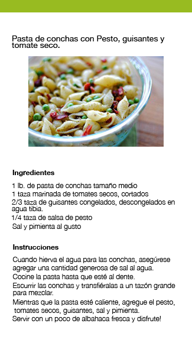

<section id="platillopastas2" data-transition="fade" >

     <!-- Encabezado -->
        <header>     
                <nav>
                        <button data-view-aside="menu" data-icon="menu"></button>
                </nav>
                <nav class="on-right">
                        <button data-view-section="pastas" data-icon="arrow-left"></button>    
                </nav>
                       
        </header>

    <!-- Cuerpo -->
        <article class="active scroll">
           
                 

        </article>

</section>